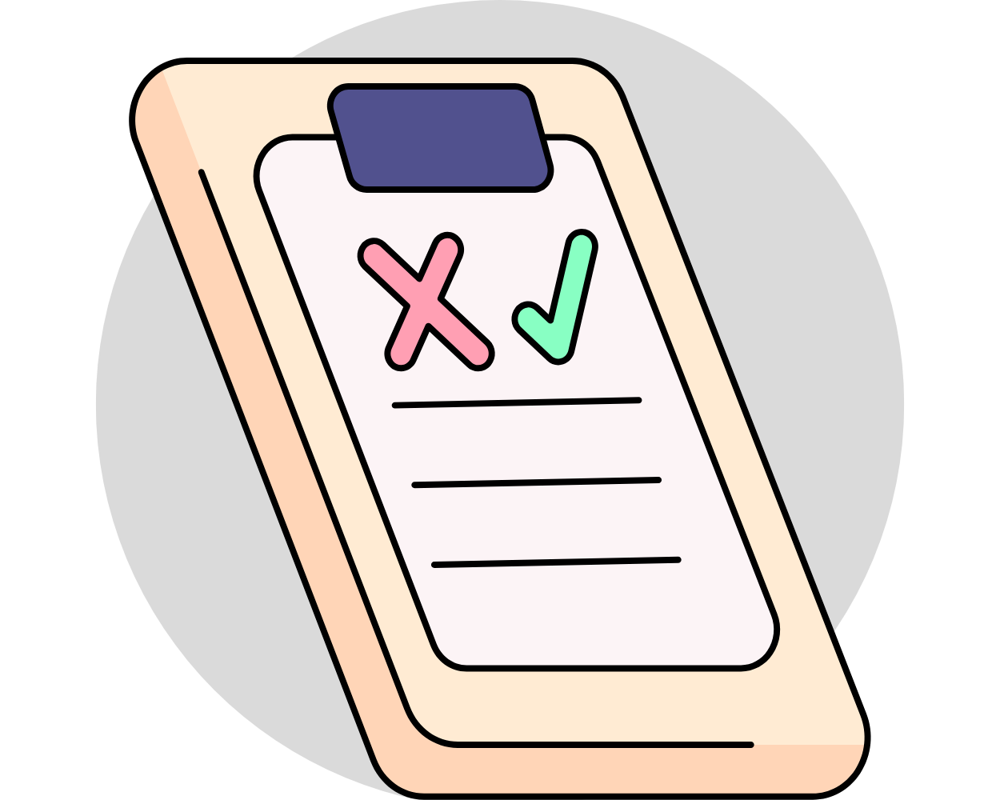

Risker i arbetsmiljön (AFS 2023:10)
I denna föreskrift kan du läsa vad som gäller vid undersökning, riskbedömning och
åtgärder vid buller, vibrationer, kemiska riskkällor och belastningsergonomi.
Klicka på knappen för att komma till översikten över de relevanta kapitlen.
Regelstrukturens indelning - Övriga regler
Grundläggande regler handlar om de grundläggande skyldigheter som gäller för arbetsgivare eller motsvarande oavsett verksamhet. Detta gäller även för byggherrar, projektörer och byggarbetsmiljösamordnare.

Arbetsutrustning och personlig skyddsutrustning – Säker användning (AFS 2023:11)
Denna föreskrift gäller användning av arbetsutrustning såsom maskiner, anordningar,
verktyg, redskap eller installationer som används i arbetet.
Utformning av arbetsplatser (AFS 2023:12)
Syftet med föreskriften är att arbetsplatser ska utformas för att förebygga ohälsa och
olycksfall samt skapa förutsättningar för en god arbetsmiljö.
Risker vid vissa typer av arbeten (AFS 2023:13)
Syftet med dessa föreskrifter är att förebygga ohälsa och olycksfall vid riskfyllda arbeten,
såsom arbete med asbest, dykeriarbete eller sprängarbete.
Gränsvärden för luftvägsexponering i arbetsmiljö (AFS 2023:14)
Föreskriften syftar till att förebygga ohälsa hos arbetstagare som utsätts för de
ämnen som anges i föreskriften, tidigare kallade hygieniska gränsvärden.
Medicinska kontroller i arbetslivet (AFS 2023:15)
Syftet med dessa föreskrifter är att minska risken för arbetsrelaterad ohälsa
genom medicinska kontroller som:
1. Bedömer om arbetstagarens hälsotillstånd tillåter en viss typ av arbete,
2. Möjliggör tidig upptäckt av tecken på ohälsa som orsakas av exponering,
3. Ger underlag för att vidta åtgärder på arbetsplatsen.